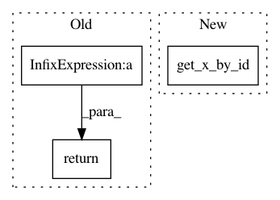

dbb0ec9bb22cf76b794817feede065528507856d,cistar-dev/cistar/controllers/base_controller.py,BaseController,get_safe_action,#BaseController#Any#Any#,40
Before Change
time_step = env.time_step
if this_vel + action*time_step > safe_velocity:
return (safe_velocity - this_vel)/time_step
else:
return action
def safe_velocity(self, env):
After Change
lead_vel = env.vehicles[lead_id]["speed"]
lead_length = env.vehicles[lead_id]["length"]
this_pos = env.get_x_by_id(self.veh_id)
this_vel = env.vehicles[self.veh_id]["speed"]
time_step = env.time_step
In pattern: SUPERPATTERN
Frequency: 3
Non-data size: 3
Instances
Project Name: flow-project/flow
Commit Name: dbb0ec9bb22cf76b794817feede065528507856d
Time: 2017-03-10
Author: nishantkheterpal@gmail.com
File Name: cistar-dev/cistar/controllers/base_controller.py
Class Name: BaseController
Method Name: get_safe_action
Project Name: flow-project/flow
Commit Name: da03fd1bde5d2d4836e11def61d19dcc2d4c2b6b
Time: 2018-01-01
Author: cathywu@eecs.berkeley.edu
File Name: flow/envs/two_loops_one_merging.py
Class Name: TwoLoopsOneMergingEnvironment
Method Name: get_state
Project Name: flow-project/flow
Commit Name: c18e993f595d3b82b48eb29d9e83311874b98129
Time: 2018-01-01
Author: cathywu@eecs.berkeley.edu
File Name: flow/envs/two_loops_one_merging.py
Class Name: TwoLoopsOneMergingEnvironment
Method Name: get_state